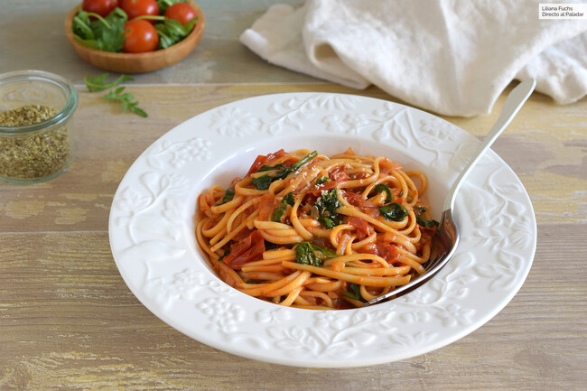

- 200g de pasta (tipo spaghetti)
- 1 lata de tomate triturado
- 1 diente de ajo
- 1 cucharada de aceite de oliva
- Sal y pimienta al gusto
- Albahaca fresca (opcional)



- Cocine la pasta siguiendo las instrucciones del paquete. Escúrrala y resérvela.
- En una sartén, caliente el aceite de oliva y dore el ajo picado.
- Agregue el tomate triturado a la sartén y cocine a fuego medio durante unos 10 minutos, removiendo de vez en cuando.
- Sazone con sal y pimienta al gusto. Si lo desea, puede añadir albahaca fresca picada para darle más sabor.
- Combine la pasta cocida con la salsa de tomate, mezcle bien y sirva caliente.
VIDEO